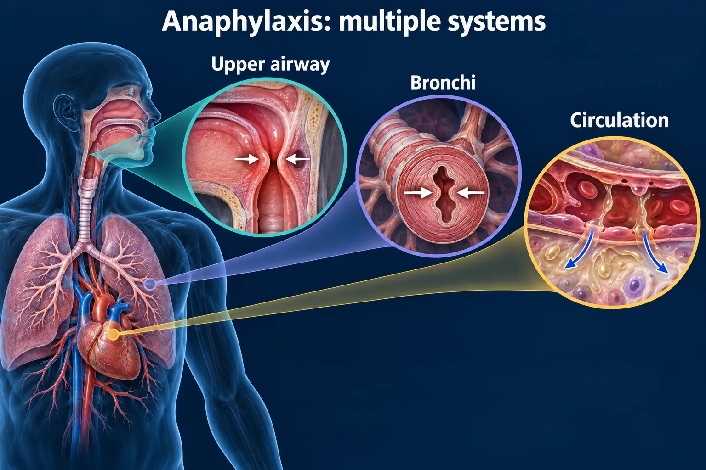

ABSN STUDY HUB · VISUAL STUDY CARD
Anaphylaxis: recognize → act → reassess

Course labels and notes from the original graphic, arranged into readable sections. The illustration is schematic.
Course overview
NUR 258 / MODULE 3 / VISUAL STUDY GUIDE
- Anaphylaxis: recognize → act → reassess
- Rapid airway, breathing or circulation changes demand immediate action.
1. RECOGNIZE
- Airway, breathing, circulation: Throat or tongue swelling • wheeze / breathlessness • faintness / low blood pressure
- Can also come with: Hives, flushing, vomiting or diarrhea may accompany the reaction.
💡 Skin findings can be absent. Do not wait for a rash.
2. ACT NOW — IM EPINEPHRINE
- Give promptly into the mid-outer thigh.
- Use the emergency protocol / order.
- Activate emergency help; stop the trigger if feasible without delaying treatment.
SUPPORT AT THE SAME TIME
- Assess airway, breathing and circulation.
- Give oxygen; prepare airway support.
- Establish IV access; fluids for shock.
- Monitor vital signs, oxygenation and ECG.
3. REASSESS → REPEAT / ESCALATE
- Repeat IM epinephrine if needed per protocol; escalate persistent symptoms.
- Continue observation after improvement because symptoms can recur.
KEEP THESE TWO RULES
- Antihistamines do not treat airway obstruction or shock; never delay epinephrine.
- Keep the patient lying down; adapt for breathing difficulty. Do not let them stand.
Sources
- Sources: AAAAI anaphylaxis guidance; Resuscitation Council UK anaphylaxis guidance.
- Study aid • Reviewed September 23, 2026 • Source links and text version accompany this graphic.